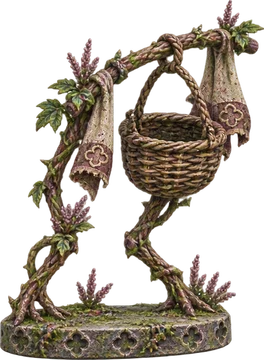
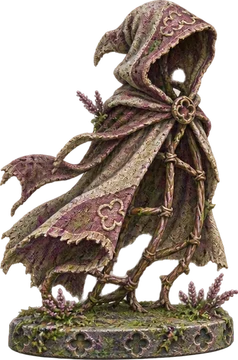

Аббатство спящих шипов
Карты и фигурки ведущего
Игровой комплект
3 игрока · 4 игрока · 5 игроков · 6 игроков · 7 игроков
Карта кампании

Поля боя


Герои


Персонажи ведущего


Противники


Плетёный водонос 1Плетёный водонос 4Плетёный водонос 3Плетёный водонос 2Плетёный водонос 5

Пустой дорожный плащ 4Пустой дорожный плащ 2Пустой дорожный плащ 5Пустой дорожный плащ 1Пустой дорожный плащ 3 Терновый щитоносец 2Терновый щитоносец 1Терновый щитоносец 4Терновый щитоносец 3Терновый щитоносец 5
Терновый щитоносец 2Терновый щитоносец 1Терновый щитоносец 4Терновый щитоносец 3Терновый щитоносец 5